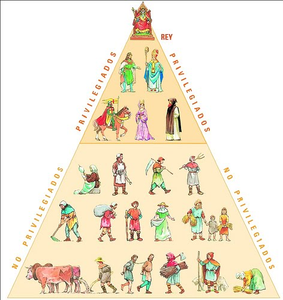

¿Por qué románico?
Se comenzó a llamar así a partir de 1824, pues utilizaba elementos derivados del arte romano como pueden ser los arcos o bóvedas. Es la culminación de un largo proceso de ensayos realizados en el arte prerrománico, incorporándose influencias bizantinas y orientales.
¿Cómo era la sociedad?
Durante esta época en España se observa un aumento demográfico, por lo que se repoblan tierras y antiguas ciudades romanas. Se observa el inicio del comercio, aunque sigue predominando la agricultura de subsistencia y se usan medios de producción tradicionales. Por otra parte, la práctica política era el feudalismo, sistema que respondió a la inseguridad de la época debido a las continuas invasiones (pueblos germánicos, vikingos, musulmanes…). Ante la incapacidad de las instituciones estatales (muy lejanas), fueron las autoridades locales (nobles o eclesiásticos) ,quienes poseían castillos o monasterios fortificados, los que se encargaban de resguardar a la gente en caso de invasión. Si lo miramos desde un punto de vista institucionalista, el feudalismo consistía en una serie de instituciones creadas en torno a una relación específica: la que se establecía entre un hombre libre (vasallo) que recibía la concesión de un bien (feudo) por parte de un hombre libre (señor), estableciéndose un contrato de obligaciones recíprocas. En resumen, en esta época dominaban la nobleza e Iglesia. La iglesia: el cristianismo se expandió, realizándose reformas importantes: mayor poder papal, unificación del ritual… Además, en esta época los monjes salvaguardaron buena parte de la cultura clásica en sus scriptoria. Por otra parte, el Románico fue difundido y desarrollado por la orden de Cluny. Cuestión del Milenio: se desarrolló un gran miedo entre los hombres de la Europa de finales del siglo X, ya que pensaban que en el año 1000 el mundo se acabaría (continuas invasiones, terror propagado por la iglesia del triunfo de la profecía del Apocalipsis de San Juan). Desde el punto de vista artístico, el terror del milenio se traduce en: - Presencia de monstruos y otros elementos iconográficos inspirados en el Apocalipsis y en el Juicio Final. - Pasado el tiempo (1033), se generó un sentimiento de piedad y acción de gracias que contribuyó a la renovación del arte religioso.
